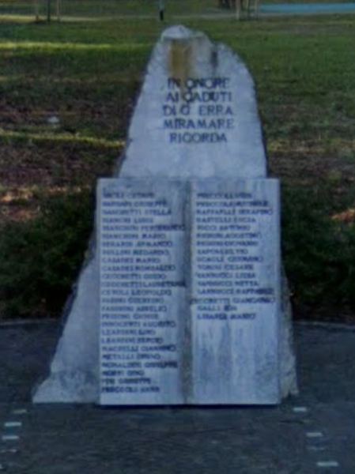

Monumento ai Caduti di Guerra di Miramare
Il monumento del parco Spina Verde
Sito in viale Mosca all’interno del parco “Spina Verde” (il più grande parco pubblico di Rimini Sud, 17500 m2) è composto da un monolite in marmo cuneiforme preceduto da un libro stilizzato aperto nella pagina contenente l’elenco dei nomi delle persone commemorate.
I nomi sono stati proposti direttamente dai cittadini di Miramare che avevano un congiunto caduto al Comitato di Quartiere tramite un modulo. Vi troviamo diversi caduti o dispersi tra guerre mondiali e coloniali, tra cui militari, marinai, ma anche civili e partigiani, in particolare è presente Giosuè Frisoni , partigiano fucilato dalle truppe naziste.
Torna alla mappa ↑